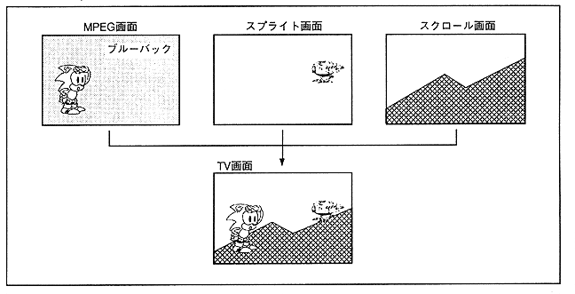

As shown in Figure 3.33, this is a function to play a movie with transparent dots. Chroma key is a technique of “photographing a person or the like in front of a blue wall, extracting a non-blue part from the screen and overlaying it on another picture”. In existing MPEG LSI, MPEG moving images can only be used in the background, but Saturn can display MPEG moving images on top of sprites and scrolls using the chroma key function.
Figure 3.33 Chroma key function
